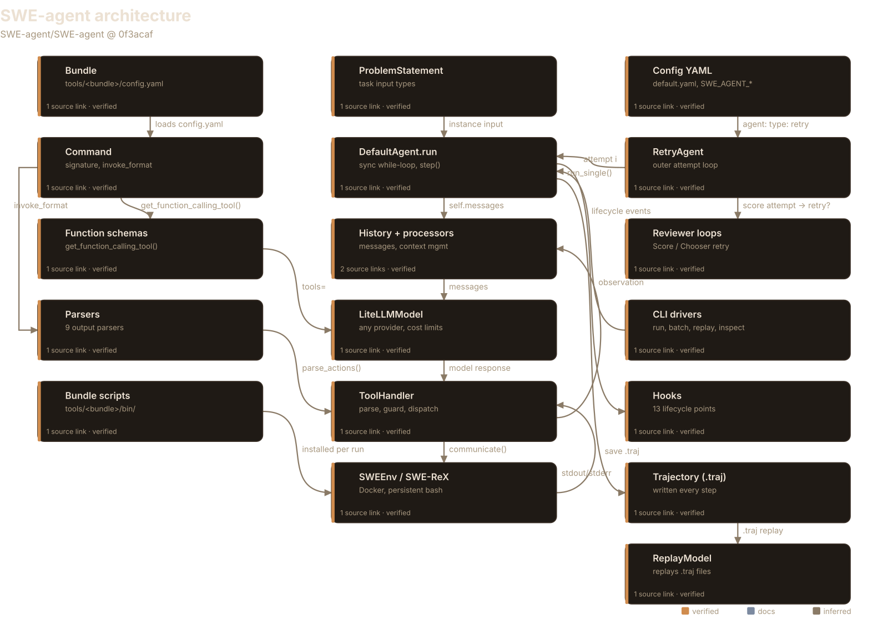
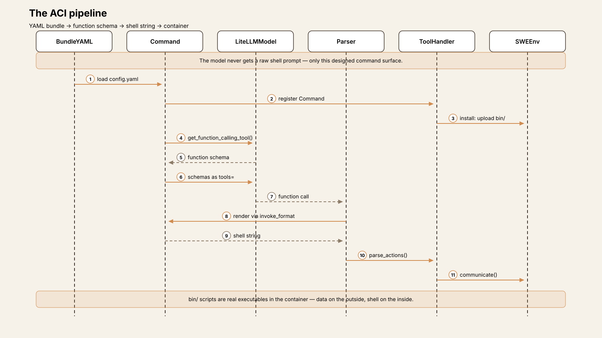
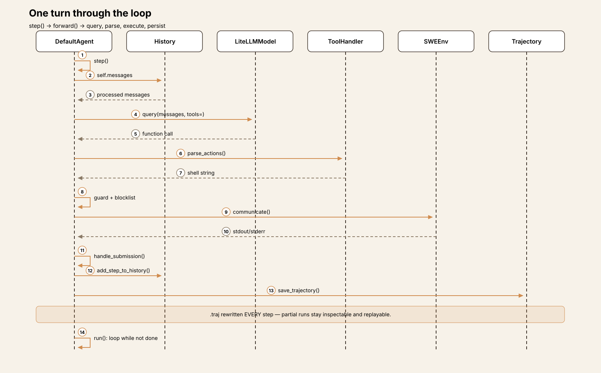
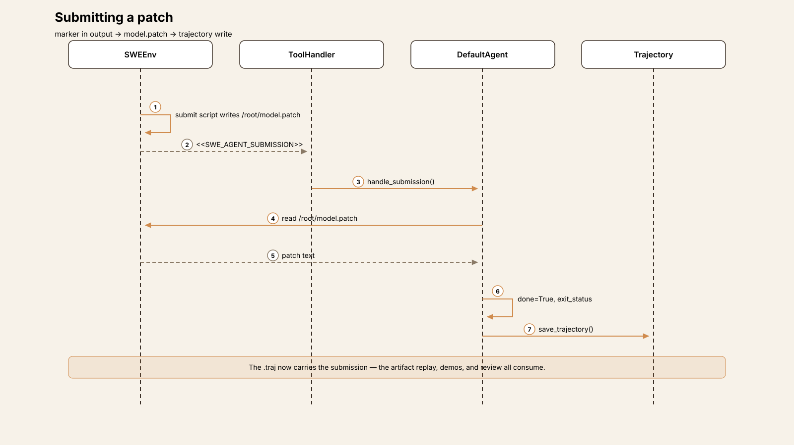
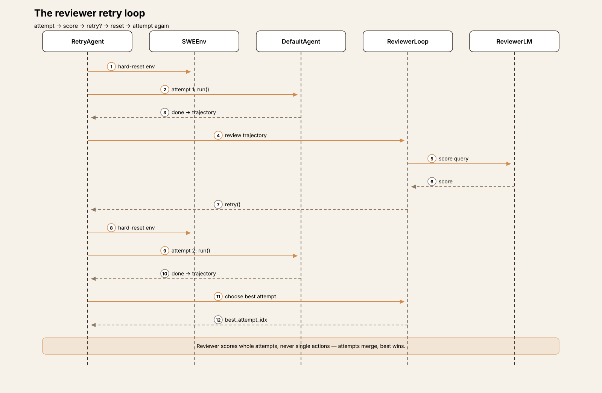
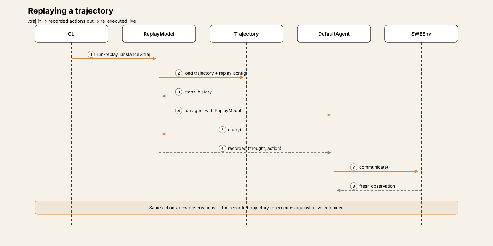

Agent Harness Anatomy #11: SWE-agent — the research original
Series: Agent Harness Anatomy — top-down dissections of real agent harnesses, grounded in verifiable source code. Every behavioral claim below carries a footnote to a pinned GitHub permalink; the full evidence lives in the endnotes.
Version block
- Repo: SWE-agent/SWE-agent
- Pinned: tag
v1.1.0→0f3acafacabc0def8cc76b4e48acb4b6cf302cb9(2025-05-22) - Language: Python (≥3.11)
- License: MIT
- Claim under test: "the research original" — the SWE-bench lineage

Explore the interactive architecture diagram 18 nodes, 20 edges — pan, zoom, and follow every subsystem linkharness, the ancestor OpenHands descends from
A scope correction first: the repo moved. SWE-bench/SWE-agent now 404s; the project lives under the SWE-agent org, and the pinned checkout's git remote confirms the canonical URL. Everything below is pinned to the new path.1
Size, for orientation: sweagent/ is 62 files and ~11,010 lines of Python; the ACI itself is 13 bundle directories of YAML and shell scripts on top; config/ adds 15 YAML configs. The big files are agents.py (1,250 lines), models.py (849), reviewer.py (664), tools.py (411), and parsing.py (540). Line counts include blanks and comments — order of magnitude, not precision instruments.2
The mental model
SWE-agent is a benchmark harness that grew an agent, not a product that happens to run benchmarks. Read it that way and every design decision clicks: the trajectory file rewritten every step (a crashed run is still data), a replay model that re-executes saved trajectories (results are auditable), trajectory-to-demo conversion (runs become few-shot examples), a reviewer that scores whole attempts and retries (inference-time scaling as a config flag), and cost-limit exits that autosubmit a patch instead of dying empty-handed. The loop itself is deliberately boring — a synchronous while not done — because the interesting machinery sits one level out: the attempt-level retry loop, the autosubmission, the reviewer.91012
The distinctive idea, and the one this series is really about, is the ACI — the agent-computer interface. The model never sees a raw shell. It sees a designed command surface defined as data: YAML schemas plus container-side shell scripts, converted to LLM function schemas at query time and to shell strings at parse time. The action space is literally edited as text files. Contrast OpenHands, which hardcodes Action and Observation classes on an event stream: SWE-agent's interface is string-in, string-out, and the "type system" is a shell script in a container.321
The governing tradeoff: SWE-agent buys research-grade flexibility — swap the entire ACI by editing YAML — at the cost of indirection and fragility. Everything is strings until the last moment.
Package map
| Package | Role | Size |
|---|---|---|
sweagent/agent/ | The harness brain: loop, LiteLLM wrapper + cost accounting, reviewer, history processors, action sampler, problem statements, hooks | 10 files, 3,707 lines |
sweagent/tools/ | The ACI loader: bundle/command schema, 9 output parsers, ToolHandler (install, blocklist, parse, dispatch, state) | 6 files, 1,332 lines |
sweagent/environment/ | SWEEnv — thin wrapper over SWE-ReX deployments (Docker default); repo cloning; persistent bash session | 6 files, 572 lines |
sweagent/run/ | CLI drivers: single, batch, replay; batch-instance sources; hooks; stats tooling | 21 files, 3,519 lines |
sweagent/api/ | Flask + SocketIO backend for the web UI | 4 files, 501 lines |
sweagent/inspector/ | Separate trajectory web inspector | 3 files, 498 lines |
sweagent/frontend/ | React web UI (48 files under src/) | — |
sweagent/utils/ | Config loading, GitHub helpers, patch formatting, logging | 8 files, 611 lines |
tools/ (top level) | The ACI content: 13 tool bundles, each config.yaml + bin/ scripts | 13 bundle dirs |
config/ | 15 YAML configs: default.yaml, benchmarks/, sweagent_0_7/, exotic/, human/ | 1,365 lines |
Entry point: pyproject.toml registers sweagent = "sweagent.run.run:main". Subcommands: run, run-batch, run-replay, traj-to-demo, run-api, merge-preds, inspect (textual TUI trajectory viewer), inspector (web viewer), extract-pred, compare-runs, remove-unfinished, quick-stats — with r/b/i/I/ru/qs aliases.17
The ACI: a designed interface, not a shell
This section is earned: the ACI is the paper's contribution and the thing that makes SWE-agent unlike every other harness in this series. Four stages, each verifiable in source:
- Declaration. Each bundle's
config.yamldeclares its commands:
signature, docstring, typed arguments (required/optional, enum, per-argument argument_format jinja). Bundle loads the YAML; Command validates that signature↔arguments agree and computes invoke_format — the template that renders a parsed call back into a shell string.3
- Implementation. Shell or Python scripts in
tools/<bundle>/bin/,
uploaded into the Docker container at /root/tools/<bundle>/bin and PATH-prepended by ToolHandler.install. Every ACI command is literally an executable the persistent shell session can run.3
- Exposure. Two paths. Function calling (the default):
Command.get_function_calling_tool() converts the YAML schema to an OpenAI function schema, passed as tools= to litellm.completion; FunctionCallingParser validates exactly one tool call against known commands and required args, then renders the shell string via invoke_format. Text parsers (ThoughtActionParser, XMLFunctionCallingParser, … — nine in total): auto-generated command_docs are injected into the system prompt and the command is pulled out of the model's prose.8
- Dispatch. Parsed action string →
guard_multiline_input(heredoc
wrapping for multiline commands like edit) → blocklist check → SWEEnv.communicate() into the persistent container bash session. State feedback closes the loop: bundles declare state_commands, get_state() runs them and reads /root/state.json, and the resulting dict (working_dir, open_file, diff, …) is rendered into the next observation template.7

The command inventory, read off each bundle's config.yaml: windowed gives open/goto/scroll_up/scroll_down/create (the paper's 100-line file viewer); search gives find_file/search_dir/search_file; three windowed_edit_* bundles give edit variants (+insert); edit_anthropic gives str_replace_editor; submit and review_on_submit_m give submit (the latter with a review checklist); forfeit gives exit_forfeit; filemap gives filemap. registry, diff_state, and multilingual_setup carry env vars, state, and setup scripts rather than commands. Permissions are a blocklist (ToolFilterConfig): vim, emacs, nano, gdb, less, tail -f, python -m venv, make, nohup, bare python/bash/sh/su — and nothing else. No approvals, no allowlist.6
Now the docs-vs-code finding, and it matters for this article's honesty. The docs describe the paper-era windowed ACI — the 100-line viewer, the edit linter, succinct search — as the ACI. But config/default.yaml, the config the sweagent run examples use, loads tools/registry + tools/edit_anthropic + tools/review_on_submit_m with function-calling parsing and the Anthropic filemap enabled. No windowed bundle, no open/goto/scroll. The windowed ACI survives in config/sweagent_0_7/ and config/exotic/. The shipped default is the Anthropic computer-use style ACI — code wins over docs.4
One cross-pollination detail worth keeping: tools/edit_anthropic/config.yaml carries the comment "This docstrings was taken from openhands", pointing at OpenHands' old function_calling.py. The ancestor borrowed back from the descendant.5
The core loop
DefaultAgent.run() (agents.py:1221) — the loop at line 1240, quoted in full:
while not step_output.done:
step_output = self.step()
self.save_trajectory()Synchronous while, one model call → one command execution per step, the .traj file rewritten after every one. step() (1191) → forward_with_handling() (1020, the error-requery loop) → forward() (965, one model query + parse + execute) → add_step_to_history() (673) → trajectory bookkeeping.9

Termination conditions, exhaustively — step.done is set only by:
submit: the<<SWE_AGENT_SUBMISSION>>marker in command output →
handle_submission() reads /root/model.patch (written by the submit bundle's script), sets step.submission, done=True, exit_status="submitted".10
- A literal
exitaction → done,exit_status="exit_command".10 - The
###SWE-AGENT-EXIT-FORFEIT###token in command output (emitted by
the exit_forfeit command).10
- Error autosubmission: cost, context, timeout, and runtime errors →
attempt_autosubmission_after_error() diffs the working tree (git add -A && git diff --cached > /root/model.patch) and returns done=True — a failed run still submits something.10
max_requeries=3: repeated format/blocklist/bash-syntax errors →
exit_format autosubmission.10
- Cost/call/context limits and wall-clock timeouts
(total_execution_timeout=1800, three consecutive command timeouts).10

Two deliberate absences, both verified by grep rather than asserted from silence: there is no step-count cap on the loop itself — full-agents.py grep shows no step counter; only the indirect per_instance_call_limit (default 0 = unlimited) and the cost limits bind it. The SWE-bench heavy config sets 75 calls. And there are no approval prompts — grep for confirm|approv|allowlist|y/n|prompt_user across sweagent/ returns only unrelated hits. The permission model is the blocklist, nothing more.11
The outer loop: RetryAgent.run() (agents.py:359) wraps whole DefaultAgent attempts. On each done, it feeds trajectory + info + model stats into the retry loop and asks retry(); the environment is hard-reset between attempts (_next_attempt), and the final .traj merges all attempts stamped with best_attempt_idx. Two retry strategies live in reviewer.py: ScoreRetryLoop (an LM scores each submission, retry while below accept_score, up to max_attempts) and ChooserRetryLoop (an LM picks the best of the attempts). The benchmark heavy config selects this outer loop: agent: type: retry with retry_loop: type: chooser.12

The correction the name invites: reviewer.py sounds like it reviews actions. It never sees one. The reviewer import in agents.py is consumed only by RetryAgent; DefaultAgent's step path never touches it. Reviewer scores whole attempts (sampled n_sample=5 times, averaged), the chooser picks among whole attempts — nothing in the loop filters or scores an individual action.12
One turn, end to end
Trace one step of DefaultAgent.step():
① History assembly. The messages property filters self.history to this agent's entries and chains the configured HistoryProcessors (default: the identity processor).
② Model call. LiteLLMModel.query() → _single_query(): token-counts the input against the provider's max (raising ContextWindowExceededError before spending a call), then a non-streaming litellm.completion with the function schemas as tools= and the configured temperature (default 0.0). Tenacity retries the call; cost comes from litellm.cost_calculator, and _update_stats() enforces the per-instance cost limit (default $3.00), the total cost limit, and the call limit. When configured, AskColleagues replaces the single query: sample N completions, debate them, execute the winner.1319
③ Parse. tools.parse_actions(output) → FunctionCallingParser validates exactly one tool call, a known command, and required args, then renders the shell string via invoke_format. Failures raise FormatError.8
④ Guard + blocklist. handle_action(): blocklist hit → _BlockedActionError; literal exit → done; multiline commands get the heredoc guard.9
⑤ Execution. SWEEnv.communicate(input, timeout=30) runs the string in the persistent container bash session via SWE-ReX. Three in-band tokens steer the loop without polluting history — stripped from the observation when seen: ###SWE-AGENT-RETRY-WITH-OUTPUT###, ###SWE-AGENT-RETRY-WITHOUT-OUTPUT###, ###SWE-AGENT-EXIT-FORFEIT###.10
⑥ Submission check. handle_submission(): if <<SWE_AGENT_SUBMISSION>> appears in the output, read /root/model.patch, set step.submission, done=True, exit_status="submitted".10
⑦ Feedback. add_step_to_history(): assistant entry (thought+action), then the user observation through the next-step template ("Observation: {{observation}}"); over 100k characters → the truncation template with an explicit elided-character count; empty output → the no-output template. A fresh get_state() is merged into the template variables.1415
⑧ Bookkeeping. info["submission"], info["exit_status"], edited_files{30,50,70} via PatchFormatter, model_stats; append the TrajectoryStep (action/observation/response/thought/execution_time/state/query/extra_info); save_trajectory() rewrites the .traj.16
Around all of this sits the error-requery inner loop (forward_with_handling): format, blocklist, and bash-syntax errors requery the model with an error template — updating the trajectory but not the permanent history — up to max_requeries=3, then exit_format autosubmits. Fatal errors (context, cost, environment, runtime) skip the requery and go straight to attempt_autosubmission_after_error.10
Subsystem inventory
- Tools. Covered above — the ACI. Registration is one YAML line naming
a bundle path; duplicate command names raise. Multiline commands via the heredoc guard; state via the /root/state.json round-trip.367
- Model providers.
LiteLLMModel— any provider LiteLLM supports,
selected by model-name string. API keys as SecretStr via $ENV or :::-separated rotation, with per-thread key pinning for prompt-cache affinity; a fallbacks list; tenacity retries; context-window pre-check before each call. Cost accounting in _update_stats enforces the per-instance ($3.00 default), total, and call limits. Special models: human/human_thought (stdin is the model — human-in-the-loop), replay (re-executes a .traj file), instant_empty_submit, PredeterminedTestModel (tests) — all wired through the get_model() dispatcher.13

- Prompt construction. Jinja2
TemplateConfig: system, instance, and
next-step templates, plus truncation, no-output, shell-error, and timeout templates. The format dict carries command_docs, tool env vars, the problem statement, and repo info; demonstrations load from .traj or YAML files. History processors (307 lines): identity (default), LastNObservations, ClosedWindowHistoryProcessor (collapses stale file windows), CacheControlHistoryProcessor (Anthropic prompt caching — active in the default config), TagToolCallObservations, RemoveRegex. Note what is not here: no summarization, no compaction — processors can only elide, trim, or tag.14
- Memory/session. No cross-session memory, no compaction — verified
absence. Session state is the in-memory history list plus the per-step .traj JSON: trajectory steps, the full unprocessed history, info (submission, exit status, model stats, edited-files context at three window sizes, swe-agent/swe-rex version hashes), replay_config, and the environment name. Layout: trajectories/<user>/<config>__<model>___<problem_id>/<instance_id>.traj. Trajectories double as replay inputs and as demonstrations — the research-instrumentation thesis, again.1622
- Reasoning/planning. No planner, no sub-agents. Reasoning is the
model's own discussion text, parsed out as thought. The two inference-time mechanisms are AskColleagues (sample N completions, debate, pick one — plugged into forward()) and the reviewer/chooser attempt-level loops.1912
- Extensibility. Everything is config: a new ACI is a new
tools/<bundle>/ directory plus one YAML line; a new parser subclasses AbstractParseFunction and sets parse_function.type; a new history processor joins the union; a new problem statement implements the protocol; a new model is a LiteLLM name string. Lifecycle extension via AbstractAgentHook — 13 hook points across init/run/step/model-query/action/history — with CombinedAgentHook fan-out, plus EnvHook and RunHook (e.g. SweBenchEvaluate). Pydantic extra="forbid" everywhere, so config typos fail loudly. SWE_AGENT_CONFIG_ROOT and SWE_AGENT_* env vars override config files.18
- Interfaces. The CLI (
run,run-batch,run-replay,traj-to-demo,
merge-preds, extract-pred, compare-runs, remove-unfinished, quick-stats); inspect, a textual TUI trajectory viewer; inspector, a separate web trajectory viewer; run-api, a Flask+SocketIO backend behind start_web_ui.sh's React frontend. run-batch fans instances over a ThreadPoolExecutor with SWE-bench dataset sources and an eval hook.17
- Failure handling. Layered: parse/blocklist/bash-syntax errors →
silent requery (≤3) → exit_format; API errors → tenacity; command timeouts → three consecutive → exit; total wall time 1800s; cost, context, and call limits → autosubmit attempt; dead runtime → fall back to the last trajectory state's diff. The .traj rewritten every step means partial runs are always inspectable and replayable; remove-unfinished prunes the ones that never submitted.1016
- Security. Sandboxing is the Docker container via SWE-ReX (default
image python:3.11) — and inside it the agent runs as root. There are zero human approval prompts; the only guardrail is the command blocklist. The web UI ships app.secret_key = "super secret key". SECURITY.md is a vulnerability-reporting policy, nothing more. The threat model is "researcher running benchmarks," not "user's laptop" — and the code is honest about it.20
Deliberate omissions
SWE-agent ships no approval mechanism of any kind — no per-action confirmation, no allowlist, no human gate. It ships no step cap. It ships no context compaction or summarization and no cross-session memory: history processors can only elide, trim, or tag. It ships no git-level safety net — the autosubmission diffs the tree to submit, not to protect it. And it does not try to be a product: the instrumentation (per-step trajectories, replay, reviewer/chooser, cost-limit exits, traj-to-demo) is benchmark tooling, and the interfaces that look product-ish (the React UI, the Flask API) stream runs rather than guard them.112022
Read the omissions as the research thesis: the harness is ~11k lines of framework; the agent itself lives in YAML and shell scripts. Config is the product.
Comparison matrix row
| # | Dimension | SWE-agent (v1.1.0) |
|---|---|---|
| 1 | Agent loop | Sync while not done — one model call → one command per step; termination = submit/exit/forfeit/error-autosubmit/cost/context/timeout; no step cap; optional RetryAgent outer attempt loop 91112 |
| 2 | Tool system | The ACI: YAML-declared commands → function schemas / shell strings; container-side script implementations; blocklist-only permissions; zero approvals 3620 |
| 3 | Model providers | LiteLLM, any provider by name string; per-instance/total cost + call limits; human, replay, instant_empty_submit special models 13 |
| 4 | Prompt construction | Jinja2 templates + command_docs; 100k observation cap with elision note; history processors (identity/trim/cache-control); no summarization 1415 |
| 5 | Memory/session | Per-step .traj JSON (trajectory + history + info + replay_config + env); no compaction; no cross-session memory; trajectories double as replays/demos 1622 |
| 6 | Reasoning/planning | No planner/sub-agents; AskColleagues action sampling; reviewer/chooser score whole attempts and retry — never per-action filtering 1219 |
| 7 | Extensibility | Config-driven: new bundle = dir + YAML line; parser/processor/problem-statement protocols; 13-point AbstractAgentHook; Pydantic extra="forbid" 18 |
| 8 | Interfaces | CLI (run/batch/replay/inspect/inspector/…); Flask+SocketIO API + React UI; textual TUI + web trajectory viewers 17 |
| 9 | Failure handling | Format/blocklist/syntax → silent requery ≤3 → exit_format; tenacity; timeout exits; error autosubmission diffs the tree into a patch 10 |
| 10 | Security model | Docker via SWE-ReX; runs as root in the container; blocklist-only, zero approvals; hardcoded Flask secret — researcher threat model 20 |
Endnotes
All notes VERIFIED against v1.1.0 (0f3acafacabc0def8cc76b4e48acb4b6cf302cb9) in a local clone of tag v1.1.0, with line anchors re-checked 2026-10-10, unless marked DOCS. GH = https://github.com/SWE-agent/SWE-agent/blob/0f3acafacabc0def8cc76b4e48acb4b6cf302cb9/.
-
Repo move, VERIFIED in the pinned checkout:
git remote -vshowsorigin https://github.com/SWE-agent/SWE-agent.git (fetch/push); the old org pathSWE-bench/SWE-agentreturns 404. The article cites the new URL throughout. ↩ -
Pin and sizes: tag
v1.1.0resolves to0f3acafacabc0def8cc76b4e48acb4b6cf302cb9(git describe --tags/git log --oneline -1= "Doc: Update changelog", 2025-05-22).wc -lover*.py:sweagent/62 files / 11,010 lines;agents.py1,250,models.py849,reviewer.py664,tools.py411,parsing.py540. Python ≥3.11 per GH…/pyproject.toml; MIT per GH…/LICENSE. ↩ -
The ACI as data.
Bundle(GH…/sweagent/tools/bundle.py#L17) loads each bundle'sconfig.yaml.Command(GH…/sweagent/tools/commands.py#L78) validates signature↔argument consistency and computesinvoke_format(L102-L131);get_function_calling_toolat L131 converts the YAML schema to an OpenAI function schema.ToolHandler.install(GH…/sweagent/tools/tools.py#L236) uploadstools/<bundle>/bin/into the container and PATH-prepends it. Dispatch runs throughSWEEnv.communicate(GH…/sweagent/environment/swe_env.py#L196) into the persistent container bash session; the default deployment is Docker, imagepython:3.11(L28). ↩ -
Docs-vs-code, VERIFIED code vs DOCS.
config/default.yaml(GH…/config/default.yaml, "Formerly called: anthropic_filemap.yaml") loads exactly three bundles —tools/registry,tools/edit_anthropic,tools/review_on_submit_m— withparse_function: type: function_calling,enable_bash_tool: true, andUSE_FILEMAP: 'true'; nowindowedbundle, noopen/goto/scrollcommands. The docs (docs/background/aci.md) describe the paper-era windowed ACI (the 100-line file viewer, edit linter, succinct search) as the ACI. The windowed ACI is preserved in GH…/config/sweagent_0_7/ andconfig/exotic/. ↩ -
OpenHands credit, quoted verbatim from GH…/tools/edit_anthropic/config.yaml#L5-L6: "# This docstrings was taken from openhands:" followed by the
All-Hands-AI/OpenHandsfunction_calling.pyURL (sic — the typo is in the source). ↩ -
Command inventory, read off each
tools/*/config.yamlat the pinned SHA:windowed(open,goto,scroll_up,scroll_down,create),search(find_file,search_dir,search_file),windowed_edit_linting/windowed_edit_replace/windowed_edit_rewrite(edit, +insert),edit_anthropic(str_replace_editor),submitandreview_on_submit_m(submit),forfeit(exit_forfeit),filemap(filemap);registry,diff_state,multilingual_setupdeclare no commands. Blocklist:ToolFilterConfig(GH…/sweagent/tools/tools.py#L28, entries through L78) — vim/vi/emacs/nano, gdb, less,tail -f,python -m venv, make, nohup, barepython/python3/ipython/bash/sh/su. ↩ -
State round-trip:
ToolHandler.get_state(GH…/sweagent/tools/tools.py#L318) runs each bundle'sstate_commandand reads/root/state.json; e.g.edit_anthropicdeclaresstate_command: "_state_anthropic"(GH…/tools/edit_anthropic/config.yaml#L111). The state dict feeds the next observation template viaadd_step_to_history. ↩ -
Parsers: nine
AbstractParseFunctionsubclasses in GH…/sweagent/tools/parsing.py (ActionParserL72,ActionOnlyParserL97,ThoughtActionParserL109,XMLThoughtActionParserL168,XMLFunctionCallingParserL225,EditFormatL320,FunctionCallingParserL367,JsonParserL444, plus the abstract base).parse_actionsat GH…/sweagent/tools/tools.py#L359; the multiline heredoc guard at L363. ↩ -
The loop:
DefaultAgent.run(GH…/sweagent/agent/agents.py#L1221);while not step_output.done: step_output = self.step(); self.save_trajectory()at L1240-L1242.step()at L1191,forward()at L965,forward_with_handling()at L1020,handle_action()at L895 (blocklist check, then literalexit→ done at L901-L906, thenSWEEnv.communicate). ↩ -
Termination. Submit marker detection: GH…/sweagent/tools/tools.py#L355 (
<<SWE_AGENT_SUBMISSION>>in output);handle_submissionat GH…/sweagent/agent/agents.py#L829 reads/root/model.patch(L846), setsdone=True(L862). Autosubmission:attempt_autosubmission_after_errorat L782, including thegit add -A && git diff --cached > /root/model.patchfallback (L815). Requery bound:max_requeries: int = 3(L150), loop at L1065,exit_formatafter exhaustion. In-band tokens defined at L193-L195, acted on at L954-L960 (###SWE-AGENT-RETRY-WITH/WITHOUT-OUTPUT###,###SWE-AGENT-EXIT-FORFEIT###). ↩ -
Verified absences (2026-10-10, pinned SHA). No step cap: case-insensitive grep for step-count limiting over all of
sweagent/agent/agents.pyshows no step counter — the loop is bounded only indirectly byper_instance_call_limit(default 0 = unlimited, GH…/sweagent/agent/models.py#L78) and cost limits; the heavy benchmark config setsper_instance_call_limit: 75(GH…/config/benchmarks/250212_sweagent_heavy_sbl.yaml#L15). No approvals: grep forconfirm|approv|allowlist|y/n|prompt_useracrosssweagent/returns only unrelated hits — the permission model is the blocklist (6), nothing more. ↩ -
Reviewer as attempt-level loop.
agents.pyimportsChooserRetryLoop,ScoreRetryLoop,ReviewSubmission,get_retry_loop_from_configfromreviewer(GH…/sweagent/agent/agents.py#L33-L39), but the only consumer isRetryAgent:RetryAgent.runat L359, the attempt loop at L382-L408 (on_submit→ReviewSubmission(trajectory, info, model_stats)→retry()), environment hard-reset via_next_attempt(L290), merged trajectory stamped withbest_attempt_idx(L337-L343).DefaultAgent's step path never touches the reviewer. Retry strategies:ScoreRetryLoopConfig(accept_score,max_attempts) andChooserRetryLoopConfig(max_attempts,cost_limit) at GH…/sweagent/agent/reviewer.py#L242-L310;ReviewerConfig.n_sample: int = 5at L226;ReviewerResult.acceptat L84-L90. The heavy config selects it:agent: type: retryat GH…/config/benchmarks/250212_sweagent_heavy_sbl.yaml#L7,retry_loop: type: chooserat L136. ↩ -
LiteLLMModel(GH…/sweagent/agent/models.py#L556): any LiteLLM-supported provider by model-name string. Cost/call accounting:per_instance_cost_limitdefault 3.0 (L73), enforced in_update_stats(L604-L647);queryat L744 with tenacityRetrying(stop_after_attempt, wait_random_exponential)at L759-L761. Special models via theget_model()dispatcher (L821):HumanModel(L324),ReplayModel(L442),PredeterminedTestModel(L507),InstantEmptySubmitModelConfig(L201). API keys asSecretStrwith$ENV/:::rotation and per-thread pinning (L110-L180). ↩ -
Prompt construction:
TemplateConfig(GH…/sweagent/agent/agents.py#L60-L79) withnext_step_templatedefault"Observation: {{observation}}"(L67); the render format dict (includingcommand_docs) at L617-L632; demonstrations from.traj/YAML at L584-L615. History processors: GH…/sweagent/agent/history_processors.py (307 lines) —DefaultHistoryProcessor(identity, the default, agents.py:147),LastNObservations,ClosedWindowHistoryProcessor,CacheControlHistoryProcessor,TagToolCallObservations,RemoveRegex. The default config addscache_control(config/default.yaml,history_processors). ↩ -
Observation cap:
max_observation_length: int = 100_000(GH…/sweagent/agent/agents.py#L79); over the cap → the truncation template with an explicit elided-char count (L691-L697). ↩ -
Trajectories:
save_trajectoryat GH…/sweagent/agent/agents.py#L738, called every step from therun()loop (L1241). The.trajcarries trajectory steps, the full history,info,replay_config, and the environment name (L721-L736).TrajectoryStepfields at GH…/sweagent/types.py#L42-L52. Output layouttrajectories/<user>/<config>__<model>___<problem_id>/<instance_id>.trajat GH…/sweagent/run/run_single.py#L84-L97. ↩ -
Interfaces: CLI subcommand dispatch in GH…/sweagent/run/run.py#L44-L78 (
run,run-batch,run-replay,traj-to-demo,run-api,merge-preds,inspect,inspector,extract-pred,compare-runs,remove-unfinished,quick-stats),main()at L59.inspectis the textual TUI (sweagent/run/inspector_cli.py);inspectorthe web viewer (sweagent/inspector/server.py).run-apiserves the Flask+SocketIO backend (sweagent/api/server.py) behindstart_web_ui.sh's React frontend (sweagent/frontend/src, 48 files).run-batchfans out over aThreadPoolExecutor(GH…/sweagent/run/run_batch.py#L276). ↩ -
Extensibility:
AbstractAgentHook(GH…/sweagent/agent/hooks/abstract.py#L10-L53, 13 hook points across init/run/step/model-query/action/history) withCombinedAgentHookfan-out;EnvHook(sweagent/environment/hooks/) andRunHook(sweagent/run/hooks/, e.g.SweBenchEvaluate). New ACI = newtools/<bundle>/dir + one bundle path in config; new parser = subclassAbstractParseFunction+parse_function.type; Pydanticextra="forbid"throughout, so config typos fail loudly.SWE_AGENT_CONFIG_ROOTandSWE_AGENT_*env overrides insweagent/utils/config.py. ↩ -
AskColleaguesaction sampler at GH…/sweagent/agent/action_sampler.py#L32, plugged intoforward()at GH…/sweagent/agent/agents.py#L989-L997: sample N completions, debate, execute the winner. ↩ -
Security: sandboxing is the Docker container via SWE-ReX (3); the agent runs as root (
/root/...paths throughout). Zero human approval prompts — verified absence, 11. Only guardrail is the blocklist (6). Web UI:app.secret_key = "super secret key"at GH…/sweagent/api/server.py#L34 — research-grade, not production.SECURITY.mdis a vulnerability-reporting policy only. ↩ -
Series-internal comparison, graded as a comparative observation across two pinned trees (not a single-source claim): OpenHands'
software-agent-sdkhardcodesAction/Observationevent classes on an event stream (see the OpenHands installment, #6), while SWE-agent's action space is YAML-declared strings rendered to shell at parse time (3). ↩ -
Verified absence (2026-10-10, pinned SHA): no summarization or compaction anywhere in
history_processors.py(307 lines — elision, trimming, and tagging only, 14); no cross-session memory insweagent/— session state is the in-memoryhistorylist plus.trajfiles (16). ↩